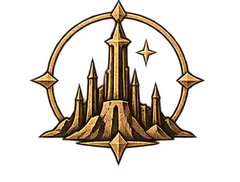
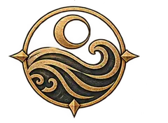
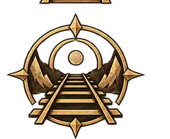

Public Reference · 1004 SR
World Guide
Explore Veyra by place, people, history, faith, magic, technology, travel, and everyday life. The guide preserves the uncertainties people inside the world still argue about.

Begin with the world
Aldara
Aldara Overview
Aldara is politically fragmented, culturally diverse, and deeply shaped by distance.
Durakhal
Durakhal is an independent realm of dwarven mountain Holds north of Tharakai.
Tharakai
Tharakai is a far-northern warrior kingdom dominated by Beastfolk clans and strongly influenced by Varesh.
Karthain
Karthain is a northern mixed kingdom with strong Beastfolk cultural influence.
Valemere
Valemere is the great multicultural commercial crossroads of central Aldara.
Ardaren
Ardaren is a human-majority kingdom of plains, rivers, vineyards, horse country, farms, noble estates, market towns, and merchant interests.
Solvarra
Solvarra is a southern human-dominant kingdom where the Crown and the Church of Aureon are deeply intertwined.
The Elderwood / Aelthirien
The Elderwood, called Aelthirien in elven tradition, is not a kingdom.
Caelora

Caelora Overview
Caelora is a continent-sized nation containing many climates, peoples, industries, and regional identities.
Velis Heartlands
The Velis Heartlands are the fertile central and eastern river plains associated with national government, dense population, agriculture, education, finance, and food…
High Spine
The High Spine occupies the great central-western mountain region, including the Titan's Spine and Mount Avaran.
Amber Expanse
The Amber Expanse is a vast western desert region of dunes, stone deserts, salt flats, dry basins, oasis communities, mineral districts, caravan routes, and arid coasts.
Northern Reach
The Northern Reach spans taiga, tundra, frozen rivers, forests, northern coasts, mining basins, and remote communities.

Southern Fenlands
The Southern Fenlands are warm wetlands, marshes, deltas, river islands, floodplains, fisheries, and agricultural basins.
Dawning Coast
The Dawning Coast is Caelora's great maritime gateway.
Mistward Marches
The Mistward Marches are scattered frontier territories located where Caelora approaches the Uncrossed Mists.
Beyond the continents
Power, belief & change
Faiths
The Four, living religious traditions, miracles, and competing interpretations of the sacred.
The Mark & Gift
Coming of Age, Marks, Fixed Gifts, Open Gifts, and inherited power.
Magic
Mana, spellcasting, traditions, rituals, and magical limits.

Technology
Arcrail, saltstone, engineering, ships, medicine, printing, and different technological paths.
Life, travel & play
Travel
Roads, rail, sea routes, borders, communication, and the scale of the world.
Daily Life
Family, education, work, food, housing, medicine, law, and leisure.
Calendar & Time
Sundering Reckoning, months, Turning Days, clocks, and standard time.
Currency & Measures
Trade Silver, currencies, banking, taxes, tolls, and standards.
Starting an Adventurer
A step-by-step path from heritage and homeland to a campaign-ready character.
Gazetteer & Glossary
A searchable player-safe reference for Veyra.